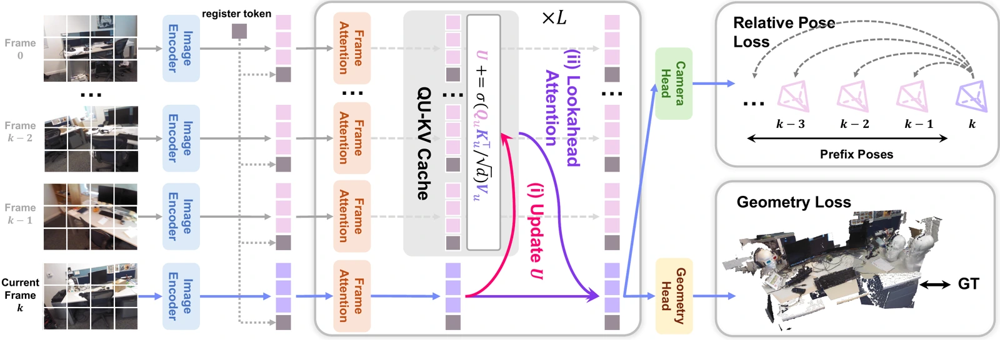
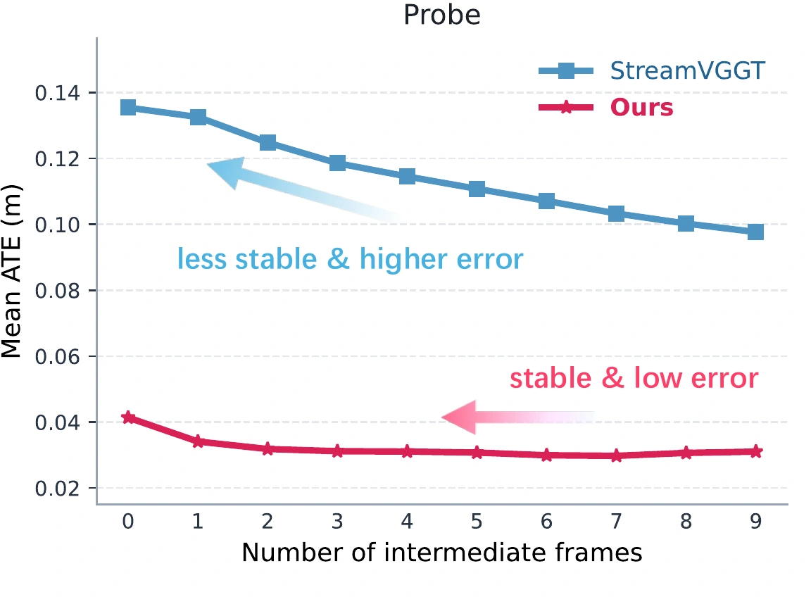
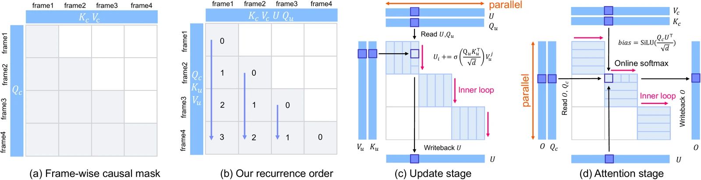
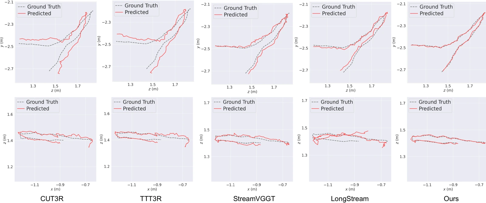

Lookahead attention
New observations refine historical memory.
NeurIPS 2026
Streaming 3D Reconstruction with Stable Geometric References
† Corresponding author

Refine historical memory and reduce first-frame bias—without revising past predictions.
Causal attention and KV-caching enable streaming 3D reconstruction, but information-poor early caches and first-frame anchoring can introduce persistent geometric bias. Stable3R addresses both sources of instability: lookahead attention refines historical caches as new observations arrive, while a frame-equivariant architecture with prefix-relative pose supervision reduces reliance on a single initial frame. Together, these designs improve reconstruction quality and camera pose estimation while preserving a strictly causal inference schedule.
Method

New observations refine historical memory.
Learn relative poses across the observed prefix.

Interactive
Common-input reconstruction comparison
Loading real point clouds…
Matched RGB frames · 518 × 392 · BF16 · full history. Same camera, point size and error scale; no model-specific filtering. RGB-D ground truth is used for evaluation. Error colors measure distance to the full GT cloud, not the display subset.
Evaluation: first-camera GT coordinates, median depth shift/scale normalization, 224 × 224 center crop, correspondence Sim(3), and point-to-point ICP (0.1 m). Acc ↓: predicted-to-GT distance; Comp ↓: GT-to-predicted distance; NC ↑: normal consistency.
Drag to rotate, Shift/right-drag to pan, scroll/pinch to zoom. Arrow keys rotate; +/− zoom; R resets. Views are synchronized; there is no automatic rotation.
Three selected examples, not a dataset-wide average. Frame IDs, metrics & source hashes
Results

| Method | Accuracy ↓ | Completeness ↓ | Normal consistency ↑ | |||
|---|---|---|---|---|---|---|
| Mean | Median | Mean | Median | Mean | Median | |
| CUT3R | 0.080 | 0.046 | 0.053 | 0.025 | 0.820 | 0.958 |
| TTT3R | 0.087 | 0.049 | 0.055 | 0.028 | 0.808 | 0.948 |
| StreamVGGT | 0.079 | 0.055 | 0.059 | 0.032 | 0.846 | 0.983 |
| LongStream | 0.078 | 0.050 | 0.052 | 0.024 | 0.836 | 0.975 |
| Stable3R | 0.022 | 0.014 | 0.020 | 0.010 | 0.884 | 0.987 |
— Not reported in the paper.
Paper Table 1. Uniformly sampled 25-frame sequences.
Accuracy: predicted-to-reference distance. Completeness: reference-to-predicted distance. Normal consistency: surface-normal agreement. ↓ Lower is better; ↑ higher is better.
Bold: best; underline: second best. Paper table data
| Method | ATE ↓ | RPE translation ↓ | RPE rotation ↓ |
|---|---|---|---|
| CUT3R | 0.210 | 0.071 | 0.607 |
| TTT3R | 0.209 | 0.082 | 0.683 |
| StreamVGGT | 0.232 | 0.082 | 0.669 |
| LongStream | 0.194 | 0.076 | 0.604 |
| Stable3R | 0.116 | 0.054 | 0.425 |
Paper Table 3. Sim(3)-aligned trajectories. TUM-dynamics and ScanNet: 90 frames; Sintel: 20–50 frames. ATE: absolute translation error; RPE: relative pose error. All metrics are lower-is-better.

Citation
@inproceedings{xiong2026stable3r,
title = {Stable3R: Streaming 3D Reconstruction with Stable Geometric References},
author = {Xiong, Jincheng and Han, Jiarong and Zhang, Hang and Xu, Mu and Qian, Ming},
booktitle = {Advances in Neural Information Processing Systems},
year = {2026},
url = {https://venite-xjc.github.io/Stable3R-page/}
}